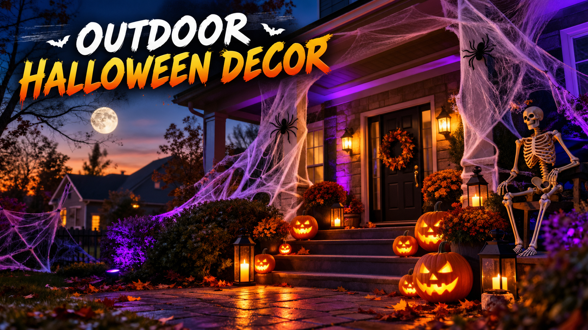

Outdoor Halloween Decor 2026: Porch, Yard & Front Door Ideas
Published October 12, 2026 · Updated October 12, 2026 · By EventBuzz Team

Your front yard is the biggest canvas Halloween gives you. Unlike a living room, it is seen by the whole street — trick-or-treaters, neighbours, and everyone slowing down to look. The difference between a yard that collects a crowd and a yard that collects windblown props is not budget; it is planning. This guide is strictly about the outside: how to stage your porch, lay out a yard scene, light it for night, anchor everything against weather, and keep the walk to your door safe. For the inside of the house, see our Halloween Decoration Ideas 2026.
Plan the Yard Like a Stage: Sight Lines and Zones
Before buying or unpacking a single prop, stand at the street and look at your house the way a passerby does. That view decides everything:
- Pick one focal point: the eye needs somewhere to land — the porch, one big yard scene, or the front door. Two competing focal points just read as clutter. Smaller yards should make the porch the star; bigger yards can carry a full scene with the house as backdrop.
- Work in zones: divide the front into the path zone (walkway lighting, guiding props), the scene zone (the main display), and the house zone (porch, door, windows). Each zone gets its own lighting colour or prop family so the composition reads in layers.
- Think in silhouettes: at night, Halloween is a shadow show. Tall thin props — dead trees, hanging ghosts, gravestone silhouettes — read from fifty metres away; small detailed props only read from the walkway. Place the big silhouettes farthest from the street.
- Keep the house behind the scene: props placed between the street and the house glow against the dark house wall behind them, which doubles their drama. Props against a lit window or streetlight lose contrast.
- Leave the walkway wide: trick-or-treaters arrive in excited clusters with costumes that catch on things. Keep at least a metre of clear path, wider if you expect crowds.
Porch Staging That Welcomes (and Warns)
The porch is where the night's transactions happen — candy, compliments, photos — so stage it as both a greeting and a finale. Frame the door symmetrically: a jack-o-lantern or lantern on each side, a wreath or hanging figure above, and a doormat that plays the theme. Railings and porch posts are made for wrapping — garlands of faux autumn leaves, orange string lights, or hanging bats turn bare architecture into set dressing.
Decide your scare level and commit. A family-friendly porch (smiling pumpkins, cartoon ghosts, candy bowl visible) and a haunted porch (fog, flicker lights, a figure in the corner) both work; a porch that cannot decide just confuses. If you go haunted, put one small "scare-free" sign or a lit candy bowl near the path so very young trick-or-treaters still feel welcome — the street remembers kindness.
Outdoor Lighting: The Real Special Effect
Lighting does more work outdoors than any prop. A dark yard with great lighting beats a cluttered yard with a single porch bulb, every time. Build it in layers:
- Wash the house: one or two outdoor spotlights in orange, purple, or green aimed at the facade turn the whole house into the backdrop. LED floodlights with colour modes are inexpensive and sip power.
- Spotlight the scene: narrow spotlights on the graveyard, the big prop, or the porch focus attention exactly where you want it. Flicker-flame bulbs in lanterns sell fire without real flames.
- Light the path: stake lights, luminaria bags, or glowing pumpkin markers along the walkway guide feet and look magical. Solar path lights charge all day and switch on automatically — zero wiring.
- Up-light trees and props: a light at the base of a dead tree or hanging ghost throws long dramatic shadows upward. This single trick makes budget props look professional.
- Keep the colour palette tight: two colours maximum plus black — orange with purple is the classic; green with purple reads toxic and fun. Every extra colour dilutes the mood.
Real candles have no place outdoors on Halloween night: wind, costumes, and paper decorations are a bad combination. Use LED candles and flicker bulbs everywhere — from the street, no one can tell the difference.
Inflatables, Projectors, Fog, and Sound
These are the big-gun effects. Each one is excellent when done deliberately and a mess when done on impulse:
- Inflatables: pick one statement inflatable, not five small ones. Anchor every tether point with the included stakes plus sandbags in wind — an inflatable rolling down the street is the classic Halloween fail. Place it where its fan cord reaches an outdoor outlet without crossing the walkway.
- Window and wall projectors: a small projector throwing ghosts, flames, or a haunted scene onto a white sheet, garage door, or window is the highest drama-per-dollar outdoor effect. Test the throw distance and focus at night before the 31st; ambient streetlight washes out weak projectors, so aim for darker surfaces.
- Fog machines: ground fog across the yard is unbeatable atmosphere, but wind is its enemy. Run the machine only on calm nights, keep it off the walkway where fog hides trip hazards, and never point the output directly at the door where trick-or-treaters cluster.
- Sound: a small outdoor-rated speaker playing creaks, howls, or a themed playlist adds a layer most yards skip. Keep volume neighbour-friendly — atmospheric, not alarming — and on a timer that ends by the local quiet hour.
One more rule: everything electrical outdoors goes on outdoor-rated timers or smart plugs, so the whole display wakes at dusk and sleeps at bedtime without a nightly walk in the cold.
Walkway Safety and Weatherproofing
The two unglamorous jobs that separate great yards from liability headaches:
- Cords: every extension cord must be outdoor-rated, kept off the walkway entirely, and run flat along edges where possible. Cord covers or a strip of outdoor tape over any unavoidable crossing prevents trips.
- Light the ground, not just the props: step edges, path borders, and any prop base near the walkway need to be visible. Solar stake lights do this job cheaply.
- Wind-proofing: stake gravestones and lightweight props; weigh down fabric ghosts and hanging figures; bring anything top-heavy inside if a storm is forecast. October wind is the number-one destroyer of outdoor displays.
- Rain: paper decorations, cardboard tombstones, and unsealed electronics die in rain. Seal paper props with clear spray, bag projector and speaker connections, and check the forecast on the 30th — a covered porch can shelter the most vulnerable pieces overnight.
- Fire: no open flames outdoors, full stop. LED everything.
Neighbour Etiquette, Budget Tiers, and Teardown
Etiquette: give neighbours a heads-up if you are running fog, sound, or anything with jump scares near the sidewalk; keep lights and noise off by a reasonable hour; and never let props or lighting spill onto a neighbour's property without asking. A street where every house glows a little beats one house blinding the block.
Budget tiers: a striking yard costs less than people think. Under a small budget: two spotlights, solar path lights, carved real pumpkins, and a bedsheet ghost. Mid-range: add one inflatable or projector plus fog. Big: animatronics, a full graveyard, and layered sound. In every tier, the money goes furthest on lighting and one focal piece — never on ten small scattered props.
Teardown: photograph the layout before you take it down so next year rebuilds in half the time. Dry everything before boxing, coil cords loosely, and label boxes by zone (path, scene, porch). A yard that packs away neatly is a yard that goes back up next October — most abandoned displays died in a damp garage, not from lack of enthusiasm.
The street test: stand at the curb at night, squint, and ask what you see. If you see one glowing scene with a lit path to the door, you are done. If you see dots of light everywhere, edit.
Frequently Asked Questions
When should I put up outdoor Halloween decorations in 2026?
Halloween 2026 is Saturday, October 31. Most yards go up the weekend of October 24–25, which gives a full week of display and a dry-weather setup window. Early starters aim for the first week of October.
How do I keep outdoor Halloween decorations from blowing away?
Stake every ground prop, sandbag inflatable tethers, weigh down fabric figures, and bring top-heavy pieces inside if storms are forecast. October wind destroys more displays than anything else.
What is the cheapest way to make a yard look amazing at night?
Two coloured LED spotlights washing the house, solar path lights along the walkway, and real carved pumpkins. Lighting creates drama; a single well-lit scene beats ten scattered props.
Are fog machines safe for trick-or-treaters?
Use them on calm nights, keep the fog off the walkway where it hides trip hazards, and never aim the output at the door where children cluster. Check that the machine is placed where its cord does not cross foot traffic.
Can I use real candles in outdoor Halloween decorations?
No — wind, costumes, and paper or fabric decorations make open flames outdoors unsafe. LED candles and flicker bulbs look identical from the street and carry no fire risk.
How do I make my outdoor display neighbour-friendly?
Warn neighbours about fog, sound, or jump scares; keep volume low and everything on a timer that ends by quiet hours; and keep lights and props on your own property.
Conclusion
A great outdoor Halloween display is a planned one: one focal scene, tight two-colour lighting, a lit path to the door, and everything anchored against October weather. Stage the porch as the finale, wash the house in colour, light the walkway, and put it all on timers. Then stand at the curb on the 31st and enjoy the crowd your planning built.
More Halloween help from EventBuzz:
Happy haunting — may your yard be the one they slow down for!
Halloween Party Picks
Costumes, decorations and party essentials to make your Halloween 2026 unforgettable.


Prices shown at the time of publishing and can change. Links take you to AliExpress, where shipping and delivery details are shown.